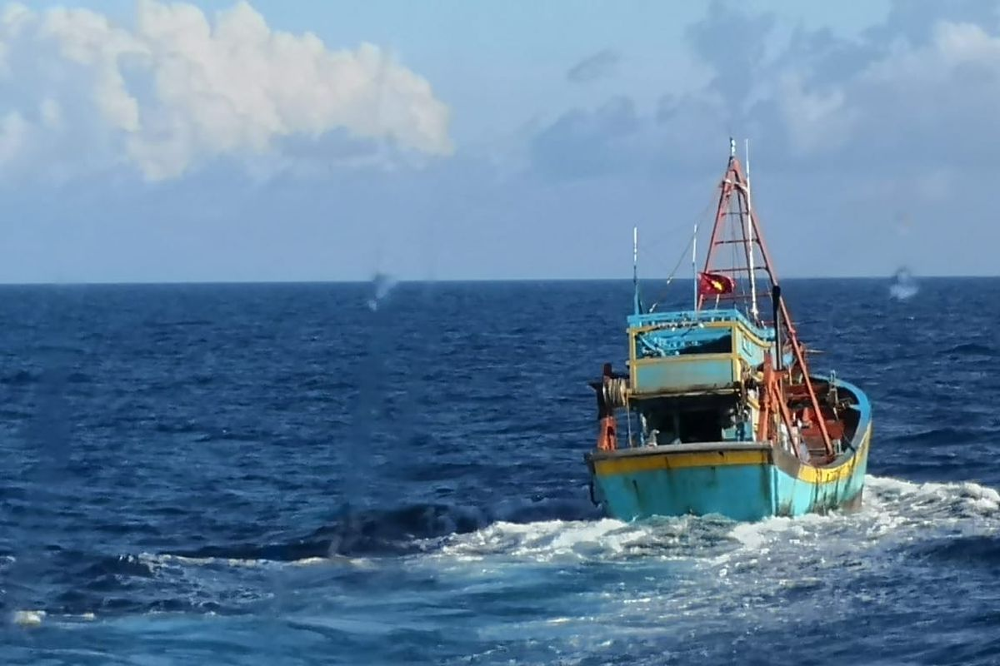
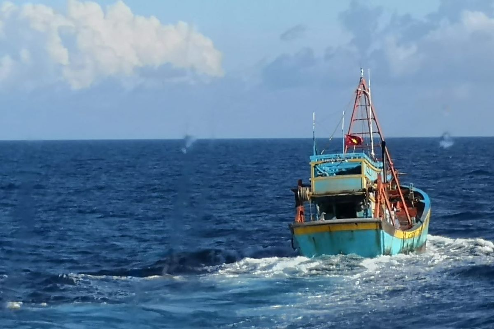
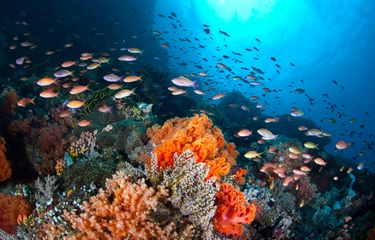
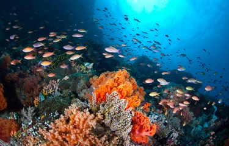

.png)


 

 

Kerja sama antara Indonesia dan negara-negara lain, baik dalam bentuk bilateral, multilateral, maupun regional, memainkan peran penting dalam memperkuat posisi Indonesia di dunia internasional. Hubungan ini tidak hanya membantu Indonesia dalam mencapai tujuan ekonomi, sosial, dan budaya, tetapi juga dalam mengatasi berbagai tantangan global yang kompleks, seperti perubahan iklim, perdagangan internasional, keamanan, dan kesehatan. Melalui kerja sama internasional, Indonesia dapat mengakses teknologi canggih, memperluas pasar ekspor, meningkatkan kualitas pendidikan, dan melindungi lingkungan.
Kerja sama ini juga memungkinkan Indonesia untuk belajar dari negara lain yang lebih maju, berbagi pengetahuan, dan bersama-sama mencari solusi atas isu global yang mempengaruhi kehidupan masyarakat di berbagai negara. Seperti dalam kasus kerja sama dengan California, Indonesia memperoleh manfaat signifikan di bidang teknologi, ekonomi hijau, pertukaran budaya, dan konservasi laut. Inisiatif-inisiatif tersebut menunjukkan bahwa kemitraan internasional dapat memberikan dampak positif yang berkelanjutan bagi kesejahteraan masyarakat, baik di tingkat lokal maupun global.
SDG 14, atau "Life Below Water," adalah tentang menjaga dan melindungi ekosistem laut agar tetap sehat dan lestari. Indonesia, sebagai negara maritim yang kaya akan sumber daya laut, sangat berperan dalam upaya ini. Dengan berbagai kerja sama internasional, seperti mengurangi sampah plastik, melindungi terumbu karang, dan mencegah perikanan ilegal, Indonesia membantu memastikan bahwa laut bisa terus memberikan manfaat ekonomi, sosial, dan lingkungan. Program-program ini tidak hanya meningkatkan kesejahteraan masyarakat pesisir, tetapi juga menciptakan kesadaran dan tanggung jawab untuk melindungi laut bagi generasi mendatang, sesuai dengan nilai-nilai Pancasila yang menekankan keadilan, kemanusiaan, dan persatuan.
Sumber - Hubungan Kerja Sama Indonesia